עשרות פרויקטים, בלי צוות פיתוח אחד — תוך חודשים ספורים
אני גיל, וטרינר במרפאת Pet Care בבת-ים. זו סקירה של מה שבניתי עם Claude Code — לא דמואים, מערכות חיות שרצות במרפאה שלי כל יום.
סימולטורים וקורסים · מודגש
סימולטור אינטראקטיבי ללימוד בדיקת אקו-לב וטרינרית, בדפדפן, בלי התקנה
האתגר הטכני
איך חותכים גיאומטרית מישור דרך מודל לב תלת-ממדי כך שהחתך משתנה בזמן אמת בדיוק לפי הזווית שבה הווטרינר מחזיק את המתמר? הפתרון — אלגוריתם שמחשב את חיתוך המישור מול אליפסואיד (sliceEllipsoid) בכל פריים.
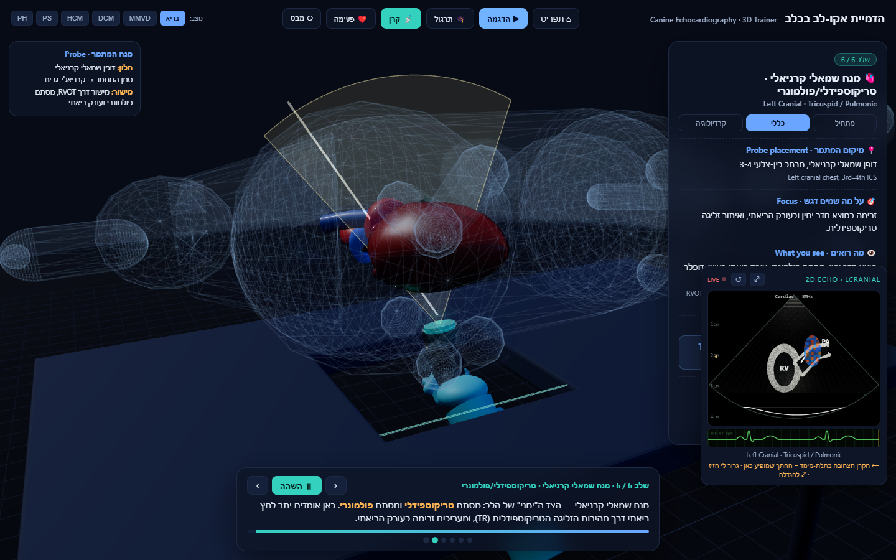
סימולטורים וקורסים
כל אחד: single-file HTML, Three.js, בעברית, בחינם ובענן
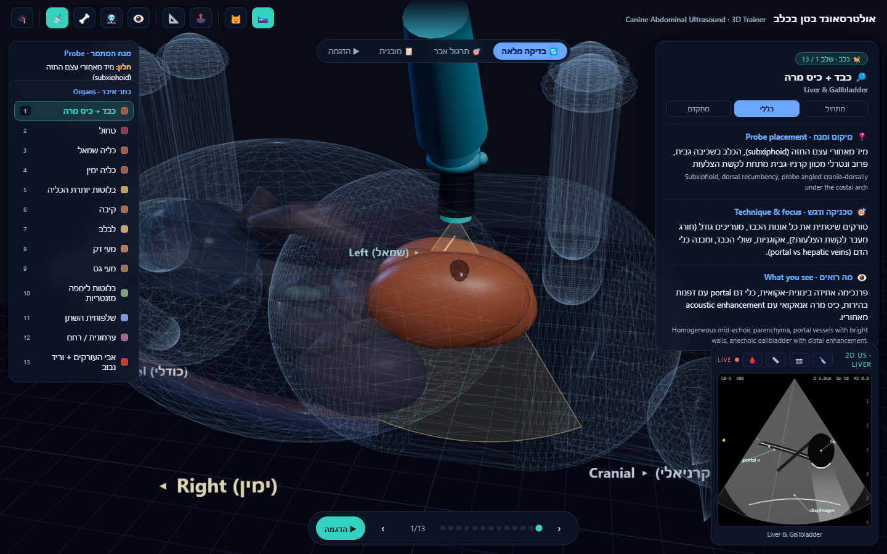
בטן תלת-ממדי
13 איברי בטן, מצבי CT/US/פתולוגיה, מין כלב/חתול
canine-abdominal-us-3d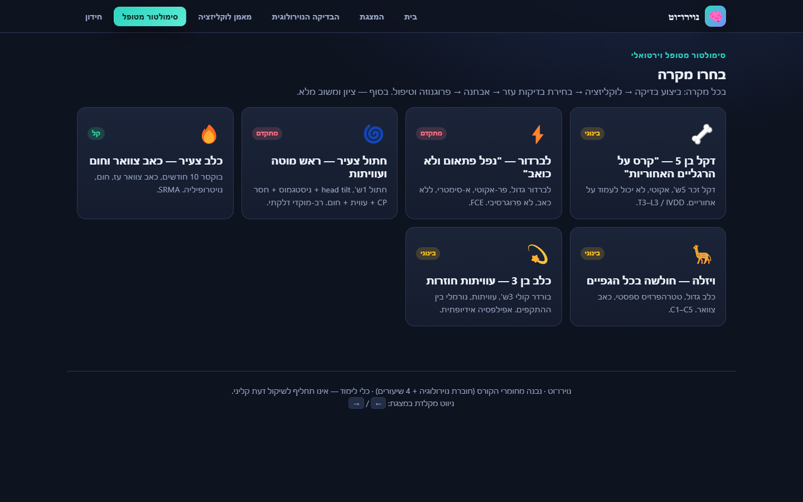
נוירו-וט
בדיקה נוירולוגית מלאה + 6 סימולציות מטופל אינטראקטיביות
neuro-trainer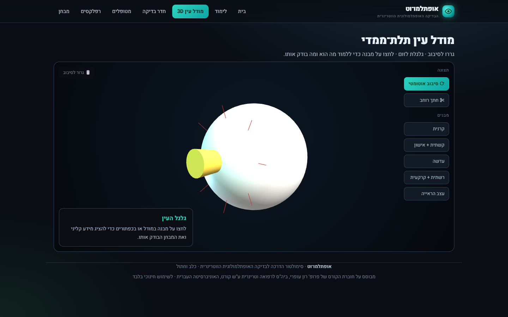
אופתלמו-וט
בדיקת עיניים תלת-ממדית + מאמן רפלקסים + 4 מטופלים
ophtho-trainer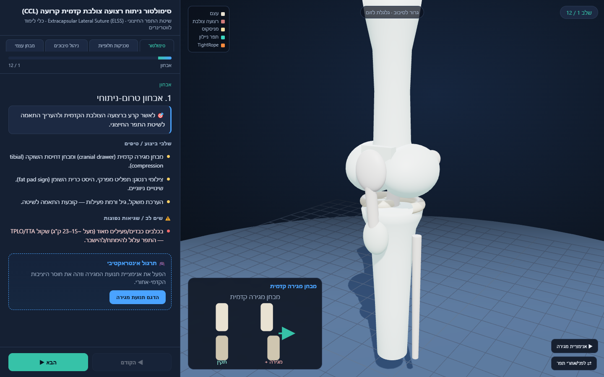
סימולטור ניתוח CCL
תיקון רצועה צולבת קרועה, 12 שלבי ניתוח + השוואת טכניקות
ccl-lateral-suture-3d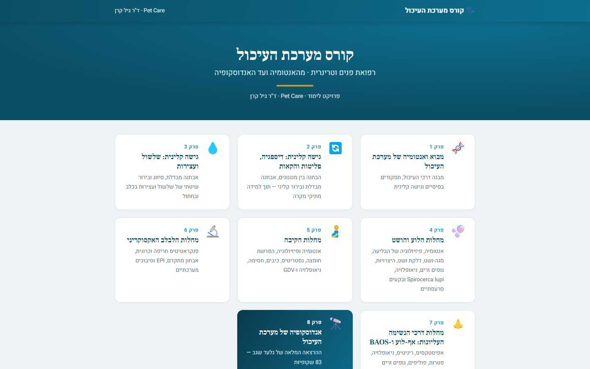
קורס אנדוסקופיה
8 פרקים על מערכת העיכול + סימולטור אנדוסקופיה תלת-ממדי
endoscopy.nip.io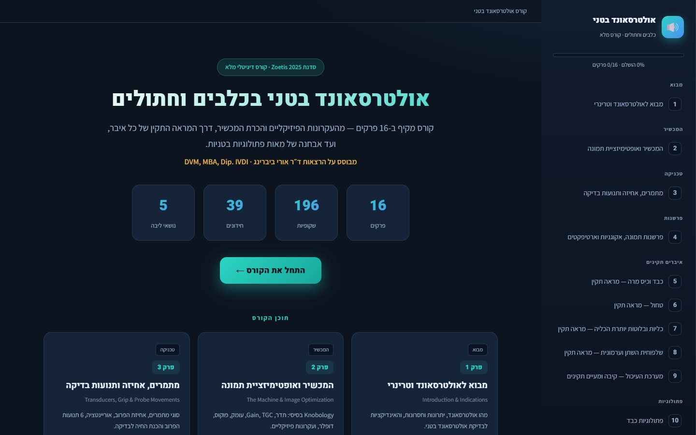
קורס אולטרסאונד בטני
16 פרקים, 39 חידונים אינטראקטיביים
ultrasound-course.nip.ioכלי אוטומציה ו-AI
כל צילום רנטגן מהמכשיר (ExamVue) — מסונכרן אוטומטית, מנותח ב-AI, נשלח ללקוח בלחיצה
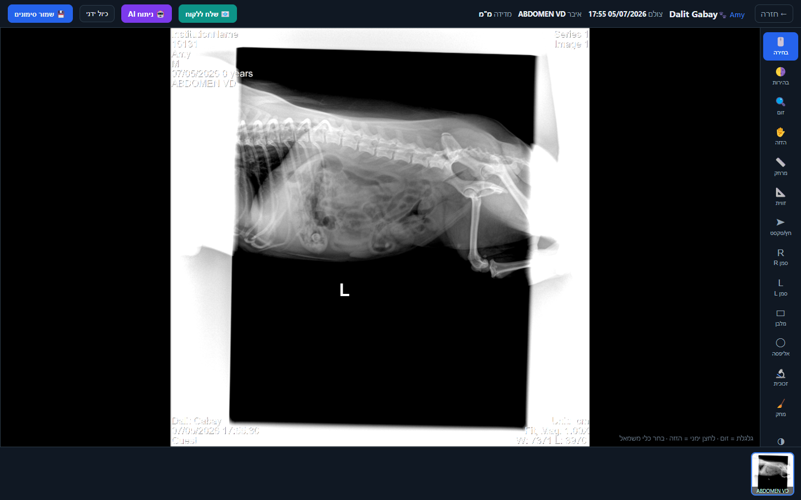
כלי אוטומציה ו-AI
מהמעבדה (IDEXX VetConnect) ישר לתיק הרפואי (ClinicaOnline) — בלי הקלדה ידנית
האתגר הטכני
לשתי המערכות אין מזהה משותף ללקוח או לבדיקה. הבעיה המרכזית הייתה למצוא דרך "להזריק" את מספר התיק של הלקוח כדי לבצע תאימות בין המערכות. הפתרון — איתור שדה לא-מנוצל (Requisition #) בטופס ההזמנה של המעבדה, והזרקת מספר התיק מהקליניקה לתוכו. ברגע שהמספר חוזר בתוצאה — יש זיהוי חד-חד-ערכי, ואימות כפול (מספר תיק + שם) לפני כל דחיפה אוטומטית.
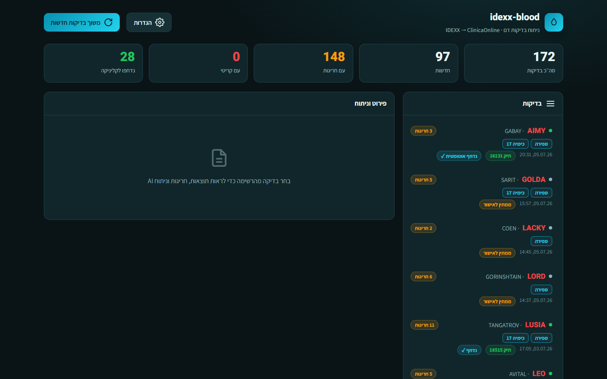
כלי אוטומציה ו-AI
התאום של IDEXX: קולט אוטומטית תוצאות ממכשיר הבדיקות המקומי (Element RC / SciLVet) ודוחף לתיק
הבדל מעניין מול IDEXX
אצל IDEXX המזהה המשותף בין המערכות אבד, ונדרש "להזריק" את מספר התיק בעורמה כדי לפתור את בעיית התאימות. אצל Element התיק כבר מוטבע מההתחלה בתוך קובץ התוצאה של המכשיר — אותו אתגר בדיוק, שני פתרונות שונים לגמרי.
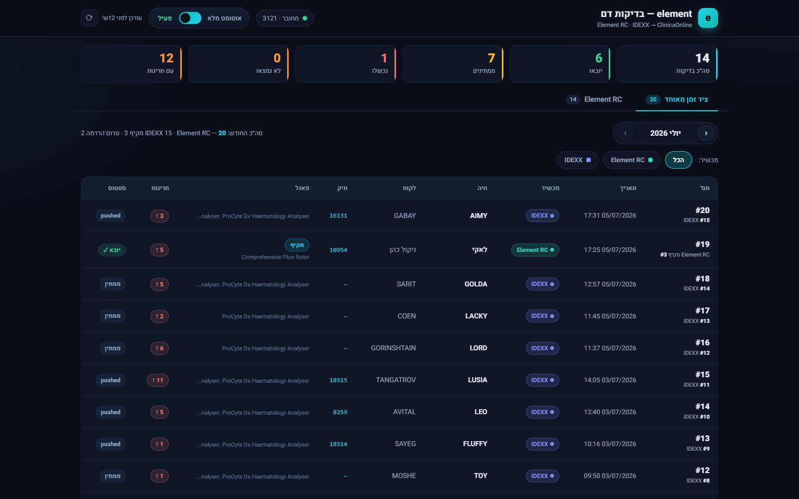
כלי ניהול
פורטל פנימי לגיל, למנהלת ולאחראית הגבייה
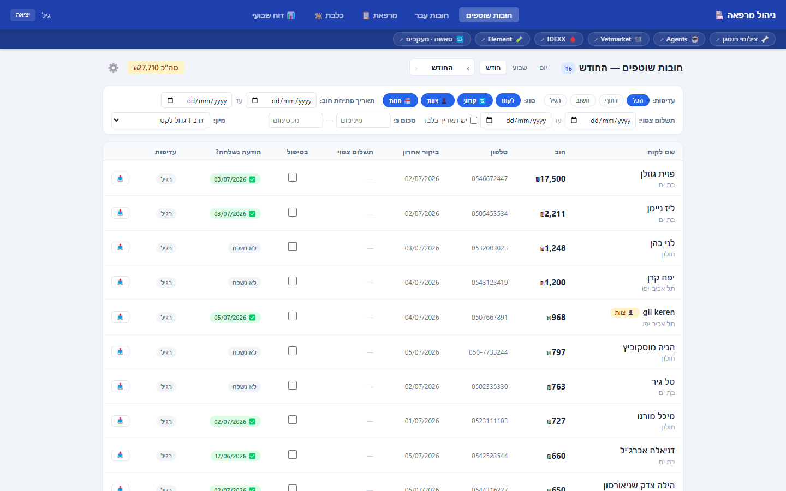
כלי ניהול
רץ אוטומטית כל בוקר, שולח סיכום יומי/שבועי/חודשי לגיל, למנהלת ולאחראית הגבייה
החלטה מעניינת
למה "תוספת חדשה" ולא "יתרה כוללת"? כי דיווח על חוב מצטבר גרר איתו מיליון ש"ח היסטורי בכל הודעה — עומס מידע ותחושת חוסר-אונים. הדיווח על ה"דלתא" בלבד הפך את הסוכן לשימושי בפועל.
כלי ניהול
השוואה יומית אוטומטית בין דוחות המרפאה לתביעות שהוגשו לביטוח
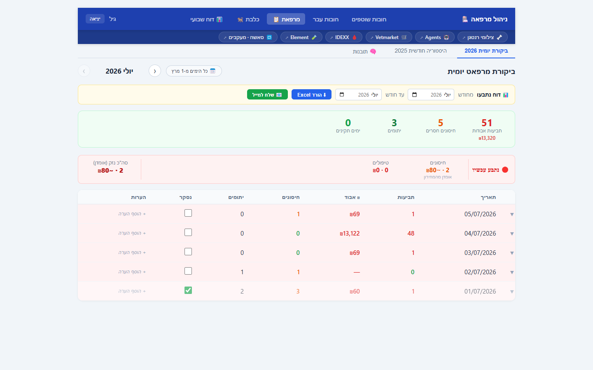
מנגנוני בקרה
שער בטיחות משותף לכל סוכני התזכורות של המרפאה
מרשומות הכלבת היו שגויות — עד שהשער תוקן
תשתית הסוכנים
מתג אחד לכל סוכן, מכסות, לוגים, ותרשימי זרימה חיים
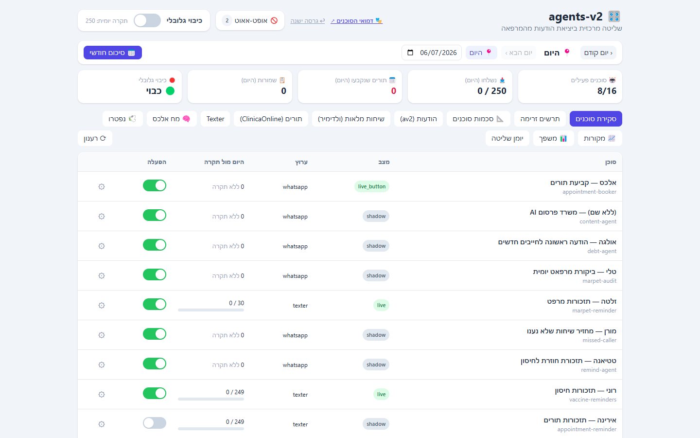
תשתית הסוכנים
כל סוכני ההודעות היזומות עברו לתבניות WhatsApp רשמיות (Meta Business) עם כפתורי-לחיצה
הסוכנים
שולחת תזכורת חיסון לפי מרחק מהתור הבא, ב-4 שלבים מדורגים
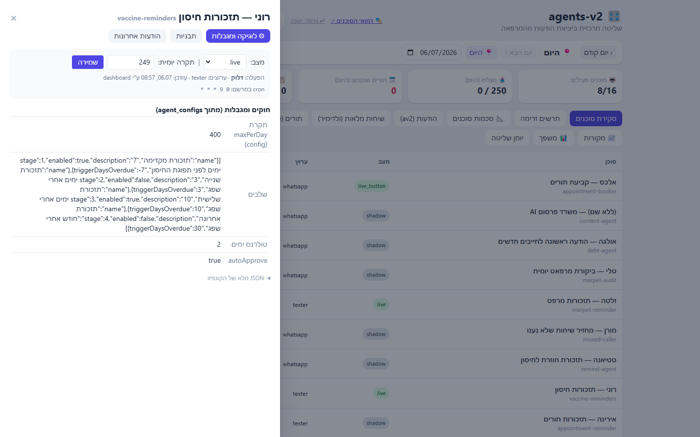
הסוכנים · הכי מורכב
הסוכנת המורכבת ביותר שבנינו
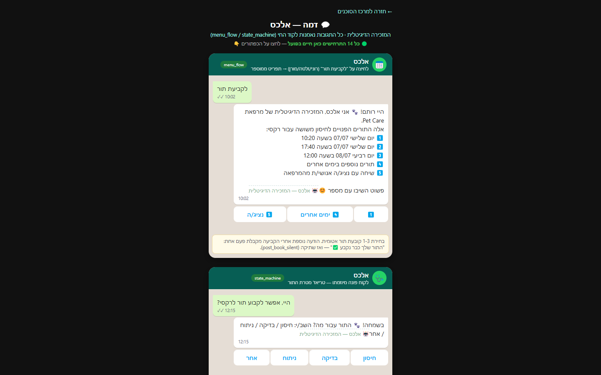
הסוכנים · שיא הטכני
לולאת למידה יומית שרצה בלי מגע יד אדם, עד שלב האישור
21:15 — ניתוח לילי
סוכן AI נפרד קורא את כל שיחות היום של אלכס
זיהוי בעיות
מאתר טעויות ואי-דיוקים בתגובות של אלכס
הצעות ידע
מנסח כלל התנהגות קונקרטי שהיה פותר את הבעיה
אישור גיל
אישור בלחיצת כפתור → מוזרק אוטומטית להוראות של אלכס
אלכס לא מתוכנתת מחדש ע"י מתכנת. היא משתפרת בעצמה, יום אחרי יום, מהשיחות האמיתיות שלה — וגיל רק מאשר את מה שהיא כבר גילתה לבד.
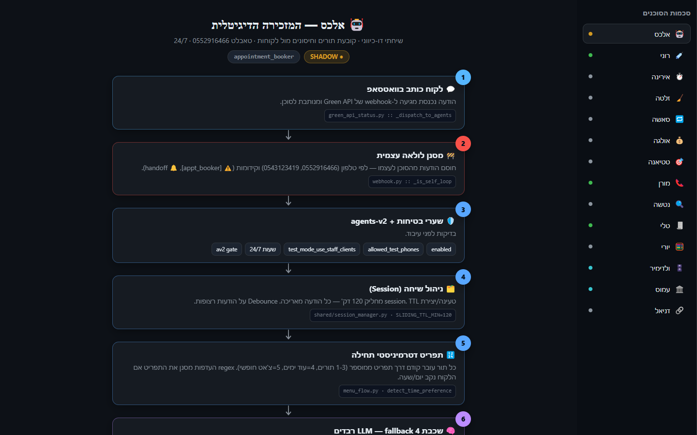
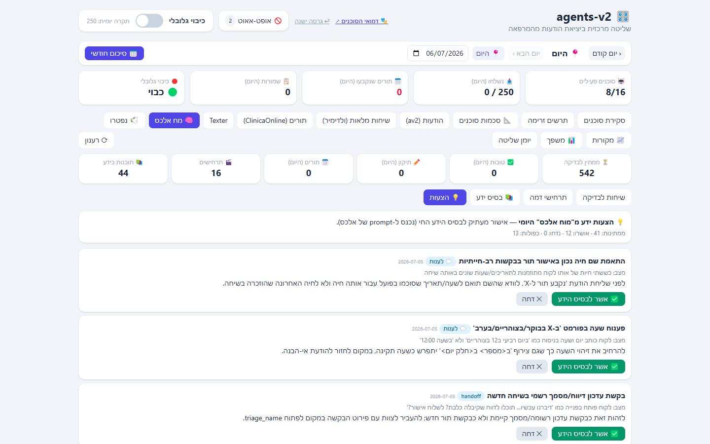
הסוכנים
מחוברת למרכזיית הטלפון הענן של המרפאה (VOXIA)
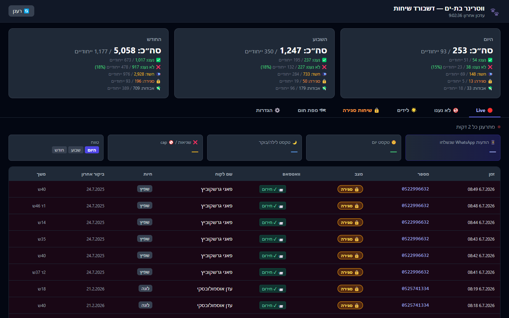
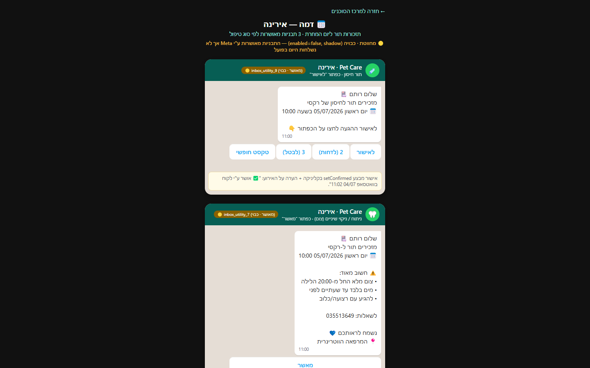
אירינה
תזכורת תור 24 שעות מראש, כולל אישור/ביטול
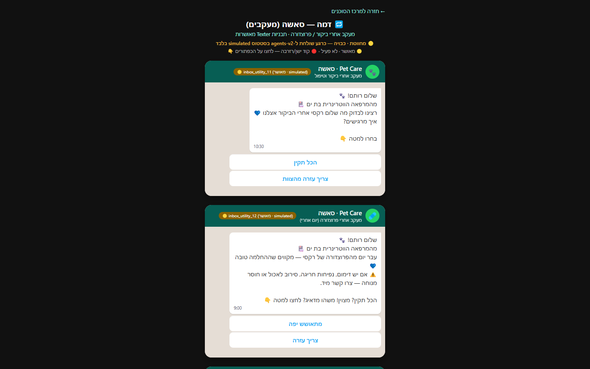
סאשה
מעקב אחרי טיפולים וניתוחים שבוצעו
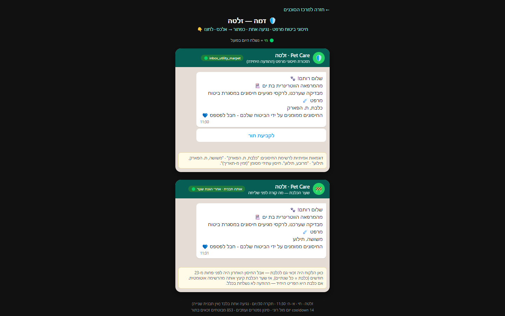
זלטה
תזכורות תביעות ביטוח מרפאט
טטיאנה
איתור לקוחות שנטשו ולא חזרו
עמוס
מאגר הנתונים המרכזי שמזין את כל השאר
ולדימיר
ארכיון מלא של כל שיחות הוואטסאפ עם לקוחות
דניאל
פטקונקט